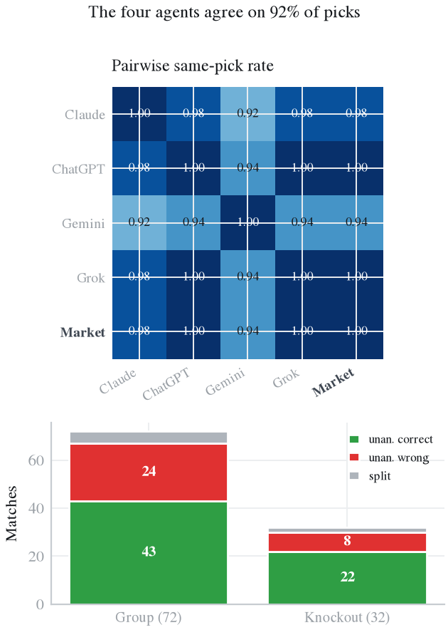
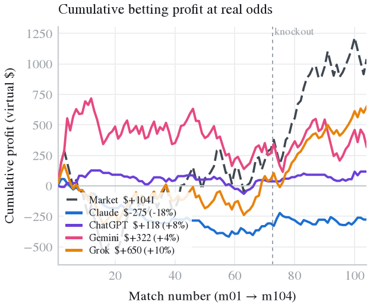
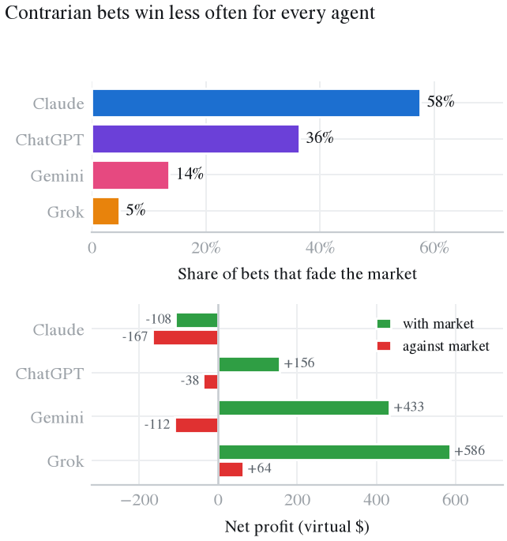
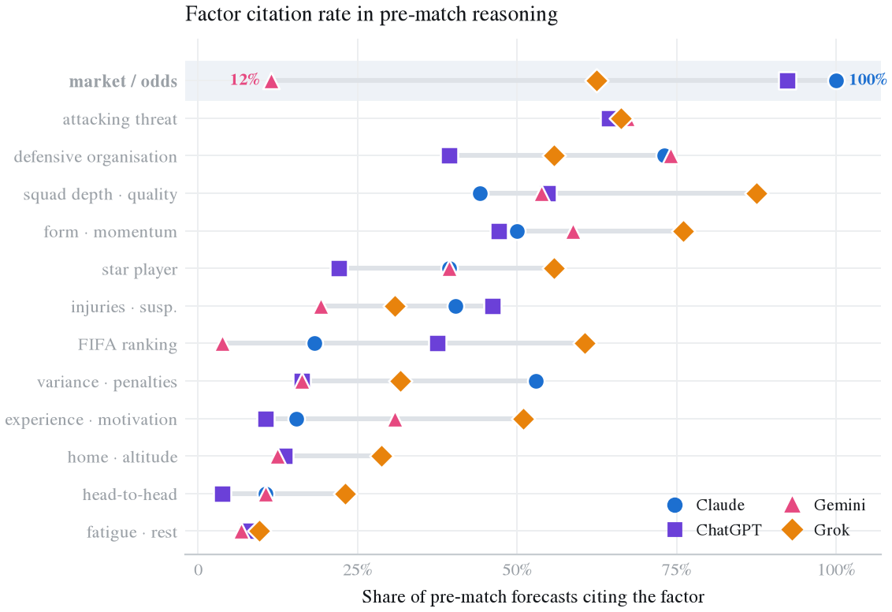
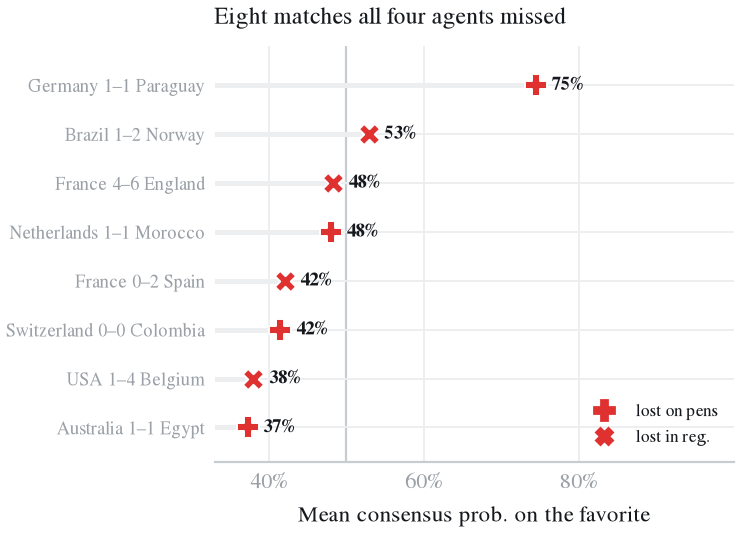
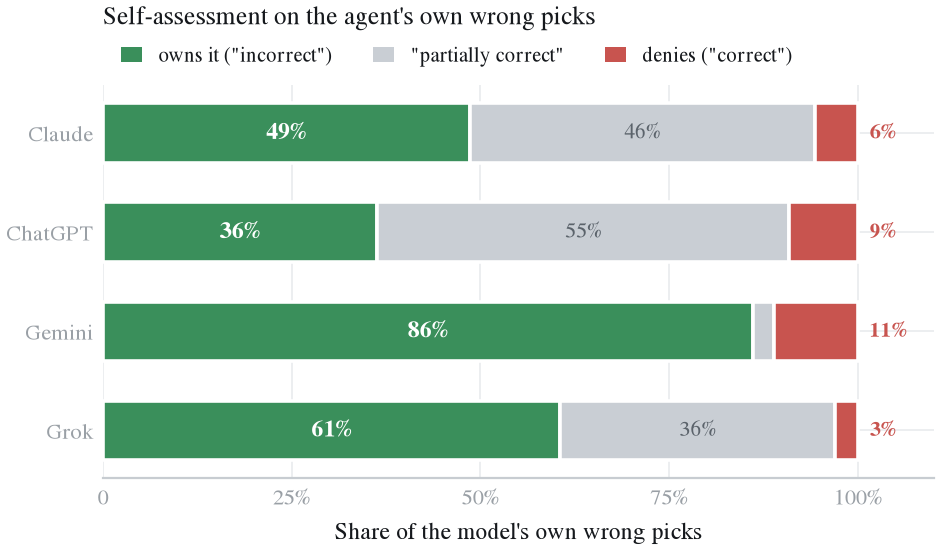

哪个AI预测2026年世界杯最准？
WC2026-Agents：四个大模型预测智能体与博彩市场同台，覆盖2026年FIFA世界杯全部104场比赛（2026年6月11日至7月19日）。作者：Jiacheng Ding、Cong Guo（美国孟菲斯大学）。
论文 arXiv:2607.17765 数据集 Hugging Face 代码 GitHub
一句话结论：Claude Opus 4.8、ChatGPT（GPT-5.5）、Gemini 3.1 Pro 和 Grok（Expert 模式）在每场世界杯比赛开球前约一天，各自联网搜索、给出胜平负概率并虚拟下注。四个模型在104场中有96场选了同一个结果，准确率在65.4%到68.3%之间，没有一个的 Brier 分数超过博彩市场（0.469）。真正拉开差距的是下注：按真实赔率结算，Grok 虚拟盈利最多（+650美元，回报率 +10.3%），Gemini +322美元，ChatGPT +118美元，Claude 亏损275美元。而每场都押市场热门能赚 +1041美元。
结果一览
| 预测者 | 准确率 | Brier（越低越好） | 对数损失 | 虚拟收益 | 回报率 | 下注数 |
|---|---|---|---|---|---|---|
| 博彩市场（去抽水赔率） | 68.3% | 0.469 | 0.807 | +$1,041* | 104 | |
| Grok（Expert 模式） | 68.3% | 0.4706 | 0.803 | +$650 | +10.3% | 104 |
| Gemini 3.1 Pro | 65.4% | 0.4828 | 0.820 | +$322 | +3.7% | 103 |
| ChatGPT（GPT-5.5，高推理） | 68.3% | 0.4729 | 0.814 | +$118 | +8.0% | 55 |
| Claude Opus 4.8 | 66.3% | 0.4705 | 0.806 | -$275 | -18.1% | 73 |
准确率：最高概率的结果（90分钟主胜、平、客胜）与实际一致的比例。*每场固定金额押市场热门。模型可自选下注金额（最多100美元）或放弃下注。
WC2026-Agents 是什么？
WC2026-Agents 是一个开源基准与数据集，用来评估大语言模型作为自主预测智能体、在真实未来事件上的表现。2026年世界杯的104场比赛，四个前沿模型都执行同一套“搜索、决策、反思”流程：联网搜集信息，给出胜平负概率和最多100美元的虚拟下注，赛后只拿到最终比分再做复盘反思。所有比赛都在模型训练截止日期之后开球，因此从设计上杜绝了数据污染。赛前博彩市场作为第五个预测者一起评分。
数据包含416条带原文推理的赛前预测、414条赛后反思、含点球大战的真实结果、带来源的赛前胜平负赔率，以及可复现的评测代码。
主要发现
1. 四个AI的预测几乎一模一样
104场中有96场（92%）选了同一个结果；8场分歧全部是3比1，其中6场是 Gemini 单独唱反调。准确率只差3场：ChatGPT 和 Grok 68.3%，Claude 66.3%，Gemini 65.4%。32场淘汰赛四个模型准确率完全相同，都是71.9%。

2. 没有AI赢过博彩市场
去抽水的市场概率 Brier 分数0.469，好于所有模型（0.4705至0.4828）。对数损失上 Grok（0.803）和 Claude（0.806）略低于市场（0.807），但差距在104场样本上可以忽略。每场押市场热门的固定策略收益 +1041美元，高于任何AI。
3. 下注才把模型区分开
预测相同，钱却不同。Grok 104场全部下注，赢70注，盈利 +650美元（回报率 +10.3%），其中淘汰赛32注赢24注、盈利 +595美元。Gemini 投入最多（8660美元），盈利 +322美元。ChatGPT 最谨慎（只下55注），盈利 +118美元（回报率 +8.0%）。Claude 73注只赢24注，亏损275美元（回报率 -18.1%）。

4. 逆着市场下注大多亏钱
Claude 有58%的下注押的不是市场热门，ChatGPT 36%，Gemini 14%，Grok 5%。逆向下注命中率只有21%到40%，顺市场下注为48%到69%；逆向下注让 Claude 亏167美元、Gemini 亏112美元、ChatGPT 亏38美元，Grok 仅有的5注逆向下注盈利 +64美元。

5. 它们看的证据不一样
推理中引用赔率或市场的比例：Claude 100%，ChatGPT 92%，Grok 63%，Gemini 12%。Grok 最常引用阵容实力（88%）和近期状态（76%）。历史交锋（4%至23%）和体能休息（7%至10%）几乎没有模型关注。

6. 平局是共同盲区
104场中24场（23%）90分钟打平，但没有一个模型把平局作为首选超过4次（Claude 1次、ChatGPT 2次、Grok 2次、Gemini 4次）。四个模型全错的32场里，22场是平局。
7. 骗过所有AI的冷门
淘汰赛中四个模型全部猜错8场：德国1比1巴拉圭、荷兰1比1摩洛哥、澳大利亚1比1埃及、瑞士0比0哥伦比亚（均点球决胜），以及巴西1比2挪威、美国1比4比利时、法国0比2西班牙、法国4比6英格兰。赛后复盘中，模型最常承认漏看的是弱队的防守组织（占错误预测的62%），最常高估的是强队的阵容实力（40%）。

8. 认错态度差别很大
预测错误后让模型自评：Gemini 86%的情况下承认“错了”，Grok 61%，Claude 49%，ChatGPT 36%；其余自评为“部分正确”或“正确”。

实验怎么做的
- 模型：Claude Opus 4.8、ChatGPT（GPT-5.5，高推理）、Gemini 3.1 Pro、Grok（Expert 模式），全部联网，整个赛事期间版本不变。
- 赛前（约提前24小时）：联网搜索后输出 JSON：胜平负概率、下注选项与金额（最多100美元或不下注）、推理与信息来源。
- 赛后：只给最终比分，输出8项反思：结果判断、校准、运气、漏看因素、高估因素、反事实、是否会改变下注、置信度。
- 评分：以90分钟结果计算准确率、多分类 Brier 分数、对数损失和校准度；下注按真实赛前小数赔率结算；去抽水的市场概率作为第五个预测者。
- 局限：只有一届赛事、104场、虚拟资金，模型版本为2026年6至7月。准确率相差几场在统计上没有显著意义。
常见问题
哪个AI预测2026年世界杯最准？
取决于看哪个指标。在 WC2026-Agents 基准（全部104场比赛）中，ChatGPT（GPT-5.5）和 Grok（Expert 模式）准确率并列最高，均为68.3%；概率质量（Brier 分数）最好的是 Claude Opus 4.8（0.4705）和 Grok（0.4706）；按真实赔率虚拟下注赚得最多的是 Grok（+650美元，投资回报率 +10.3%）。四个模型的 Brier 分数都没有超过赛前博彩市场（0.469）。
有AI在2026世界杯上赢过博彩赔率吗？
没有明显赢过。去除抽水后的市场概率 Brier 分数为0.469，优于全部四个模型（0.4705至0.4828）。对数损失上 Grok（0.803）和 Claude（0.806）略低于市场（0.807），但在104场的样本上差距小到没有意义。每场都押市场热门的固定下注策略收益 +1041美元，超过任何一个AI。
哪个AI在2026世界杯虚拟下注中赚钱最多？
Grok（Expert 模式）：104注共盈利 +650美元（投资回报率 +10.3%），其中淘汰赛阶段 +595美元。Gemini 3.1 Pro 盈利 +322美元，ChatGPT（GPT-5.5）+118美元，Claude Opus 4.8 亏损275美元（投资回报率 -18.1%）。所有下注都是虚拟的，由模型自行决定金额（每场最多100美元），按真实赛前赔率结算。
ChatGPT、Claude、Gemini、Grok 预测2026世界杯比赛的准确率是多少？
全部104场（按90分钟胜平负）：ChatGPT 68.3%，Grok 68.3%，Claude 66.3%，Gemini 65.4%；博彩市场热门的命中率同样是68.3%。32场淘汰赛中四个模型准确率完全相同，都是71.9%。四个模型在104场中有96场选了同一个结果。
AI预测到西班牙夺得2026世界杯冠军了吗？
2026年7月19日决赛西班牙1比0战胜阿根廷。赛前四个模型都把西班牙获胜列为可能性最高（或并列最高）的结果，给出的西班牙胜率在35%到44%之间。需要说明的是，模型是在每场比赛开球前约一天逐场预测的，并没有在赛前一次性预测冠军。
2026世界杯哪些比赛所有AI都预测错了？
四个模型共同预测错了104场中的32场，其中22场90分钟内打平。淘汰赛阶段四个模型全部猜错8场：德国1比1巴拉圭、荷兰1比1摩洛哥、澳大利亚1比1埃及、瑞士0比0哥伦比亚（均通过点球大战决出胜负），以及巴西1比2挪威、美国1比4比利时、法国0比2西班牙、法国4比6英格兰。
为什么AI很难预测足球比赛的平局？
在 WC2026-Agents 中，104场里有24场（23%）90分钟打平，但每个模型把平局作为最可能结果的次数最多只有4次。模型给平局的平均概率其实合理（22.7%至23.8%），只是平局很少是单一最可能的结果，所以按最高概率选结果时几乎会错过所有平局。
AI逆着博彩市场下注划算吗？
大多不划算。押注非市场热门结果的命中率只有21%到40%，而顺着市场下注的命中率为48%到69%。逆市场下注让 Claude 亏损167美元（42注）、Gemini 亏损112美元、ChatGPT 亏损38美元。Grok 很少逆市场下注，它仅有的5注逆向下注盈利 +64美元。
WC2026-Agents 数据集在哪里下载？
数据以 CC BY 4.0 协议免费开放，可在 Hugging Face（dingjiacheng/wc2026-agents）和 GitHub（graphuofm/FIFA2026LLM）获取，代码采用 MIT 协议。包含416条赛前预测、414条赛后反思、含点球大战的比赛结果以及全部104场的赛前赔率。
WC2026-Agents 是谁做的？
由美国孟菲斯大学（University of Memphis）的 Jiacheng Ding 和 Cong Guo 完成，论文为《FIFA World Cup 2026 as a Contamination-Free Benchmark for LLM Forecasting Agents: Four Models, a Bookmaker, and 104 Matches》（arXiv:2607.17765）。
引用
@misc{ding2026wc2026agents,
title = {{FIFA} World Cup 2026 as a Contamination-Free Benchmark for
{LLM} Forecasting Agents: Four Models, a Bookmaker, and 104 Matches},
author = {Ding, Jiacheng and Guo, Cong},
year = {2026},
eprint = {2607.17765},
archivePrefix = {arXiv},
primaryClass = {cs.LG},
url = {https://arxiv.org/abs/2607.17765}
}